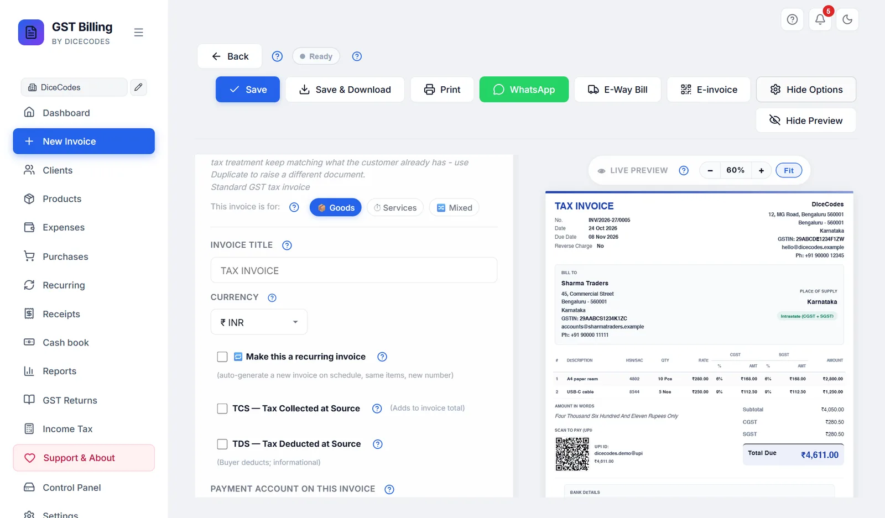
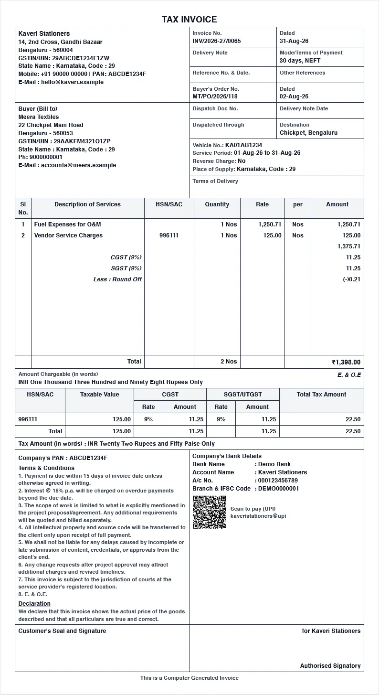
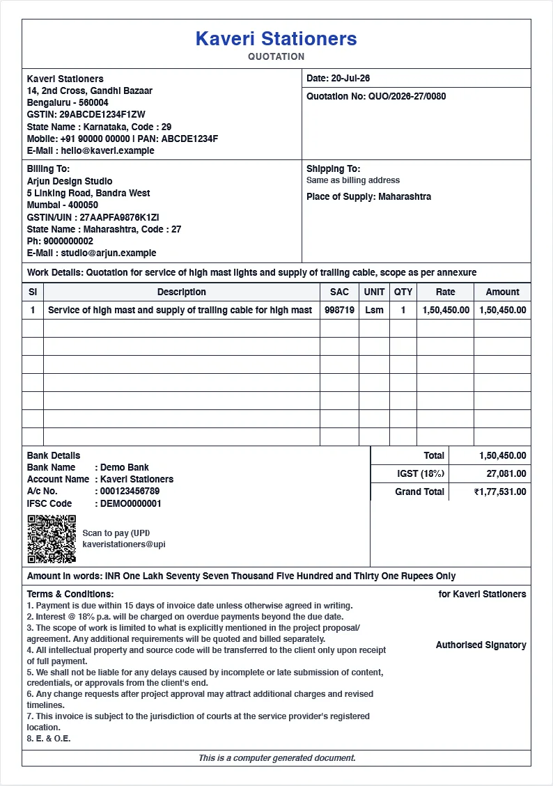

Customize: what prints and how
The Customize panel on the invoice screen: title, currency, style, colour, every show-or-hide option, paper size and thermal settings, and exactly what each part of the printed invoice shows.
#Your choices become the default
Open the panel with Customize in the invoice toolbar. Whatever you change here is used for this invoice and remembered for your next new invoice, including the title, reverse charge, TDS and TCS. If a setting was only meant for one invoice, change it back afterwards.
A saved invoice keeps the options it was saved with.
These are per-invoice settings. The app-wide look, such as fonts, watermarks, copies and translated labels, is in Print and PDF settings.

#Title, currency and exchange rate
The first three boxes at the top of the Customize panel.
| Box | What it does |
|---|---|
| Invoice Title | Replaces the printed title, such as TAX INVOICE. The box shows the type's own title in grey; leave it blank to use that. Useful for wording such as INVOICE CUM CHALLAN. Thermal receipts ignore it. |
| Currency | The same box as in Invoice Details. See Billing in another currency. |
| 1 USD = ? INR | Only for currencies other than rupees: how many rupees one unit was worth on the invoice date, such as 84.10. Kept with the invoice; returns and reports use it. |
A custom title is remembered for your next invoice too (see Your choices become the default). Clear the box when you go back to normal invoices.
#Make this a recurring invoice
Tick 🔁 Make this a recurring invoice to have the app create this invoice again on a schedule, with the same client, items and amounts, a fresh number and that day's date. Good for rent, retainers, AMCs and subscriptions.
| Box | What to enter |
|---|---|
| Frequency | Weekly, Monthly (the default), Quarterly or Yearly |
| Every N (interval) | 1 to 12. Monthly with 3 means every three months. |
| Next invoice date | When the first copy is made. Starts one month after this invoice's date (31 January becomes 28 February, not 3 March). |
| End condition | Never (until I stop it); On a specific date, which adds a Stop generating after this date box; or After N invoices, which adds a box for how many, for example 12 for a one-year monthly contract |
- Make the first invoice as usualClient, items, terms.
- Tick the box and set the scheduleIn Customize, tick 🔁 Make this a recurring invoice and fill in the boxes.
- Save the invoiceThe schedule is saved with it. Saving the invoice again later keeps the schedule running where it is, unless you change the Next invoice date.
New copies are made whenever you open the app on or after the due date (or once a day if it stays running). If this invoice has a due date, each copy gets one the same number of days after its own date. Pause, change or stop the schedule from Recurring in the sidebar.
#TCS, TDS and the payment account
#Payment account on this invoice
If you have saved bank accounts in Settings, Bank accounts and UPI, this list chooses which one prints in the bank block and the UPI QR. Each is shown by its label and bank, with ⭐ before your default. With no accounts saved, the list is not shown.
- New invoices start with your ⭐ default account (or, with no default, the one you used last).
- The preview changes as soon as you pick another account.
- The bank details and UPI ID are copied onto the invoice when you save it, so editing or removing the account in Settings later never changes an invoice you have already sent.
#PDF style and accent colour
PDF Style picks the design. Hover over a chip for a one-line description. The preview changes straight away.
| Style | Look |
|---|---|
| Classic | Clean, with a coloured bar across the top. The default. |
| Modern | A solid colour block behind your business name, with the logo in white. |
| Minimal | Simple, with no borders. |
| Boxed grid | Every section in ruled boxes: your name large at the top, seller and document details side by side, Billing To and Shipping To, a Work Details line, and an item table filled with empty rows to a fixed height, like a printed quotation pad. |
| Tally style | The Tally layout: reference and dispatch boxes beside your details, state names with their codes, taxes inside the item table, amount in words with E. & O.E, an HSN/SAC tax summary, tax amount in words, your PAN, a declaration, and a "Customer's Seal and Signature" box. |


Boxed grid and Tally style pad the item table to fill the page. If that padding alone would push the invoice onto a second page, the PDF trims it so the terms, bank details and signature stay on page 1. The boxes for order, dispatch and reference details are filled from Invoice Details.
#Accent Color
The row of round swatches sets the colour of headings, bars and lines on the invoice.
- Auto, the multicoloured swatch, gives each type its own colour, such as blue for tax invoices, purple for proformas, teal for bills of supply and red for credit notes, so you can tell them apart at a glance. The default.
- The other eight are fixed colours: blue, purple, teal, red, orange, green, sky and dark. Hover over one to see its name. Pick one to use it on every type, for example to match your logo.
The chosen swatch has a white ring inside it. The colour is remembered for your next invoice. For black-and-white printers, dark prints most clearly.
#Showing and hiding parts of the invoice
Below the style, the panel lists tick boxes in groups. Each one shows or hides one part of the printed invoice. Hiding something never deletes it: tick it again and it comes back. Each group title has its own ? that opens the part below about it.
| Group | Options | Off to start |
|---|---|---|
| Header & branding | Logo, Business name, Business address, Business phone, Business email, Business state, Tax ID (GSTIN/VAT/etc.) | |
| Client / Bill-to | Client address, Client phone, Client email, Place of Supply | |
| Invoice meta | Invoice number, Invoice date, Due date | |
| Items table | HSN/SAC column, Qty column, Unit suffix (next to Qty), Rate column, Discount column, Tax % column (GST/VAT/etc.), GST Cess % column | GST Cess |
| Totals | Subtotal row, Amount in words, Round-off line, HSN/SAC tax summary table, Tax amount in words | The HSN summary and tax in words are on only in Tally style. Round-off follows Print & PDF (on for new installs). |
| Compliance flags (India) | Reverse Charge applies (Section 9(3)/9(4)) — recipient pays GST | Reverse Charge |
| Footer | Bank details, "Pay via" account label, UPI QR (rupee invoices), Signature block, "Authorized Signatory" caption, Terms & Conditions, Notes / Remarks, system-generated note, Declaration, "Customer's Seal and Signature" box | "Pay via" label, system-generated note. Declaration and the seal box are on only in Tally style. |
Between Compliance flags and Footer sits the Paper / print size list.
Hide all and Reset to default
- Hide all turns off, in one click, everything in Header & branding, Client / Bill-to and Invoice meta; in Items table everything but GST Cess; in Totals the subtotal, amount in words and round-off; and in Footer the bank details, "Pay via" label, UPI QR, signature, caption, terms and notes. Then tick back only what you want. It leaves the HSN summary, tax in words, reverse charge, system-generated note, declaration and seal box as they were.
- Reset to default puts every option back as it was on a fresh install, including the title, currency, style, colour, paper size, Goods/Services choice, whole-bill discount, recurring, TDS, TCS and reverse charge. The payment account you picked for this invoice stays.
It turns off the Tax % column, which removes GST from the invoice, and the Round-off line, which can change the total. Tick both back on a tax invoice.
#Header & branding
Your side of the top of the invoice: Logo, Business name, Business address, Business phone, Business email, Business state and Tax ID (GSTIN/VAT/etc.). All on to start. The logo, name and address come from Settings.
- Business state off also hides the client's state, on the invoice and in the Billed To card.
- Tax ID off also hides the client's GSTIN, on the invoice and in the Billed To card. A GST tax invoice must show both GSTINs, so keep it on for tax invoices.
- Using a printed letterhead? Turn the header items off, or set a letterhead in Print Settings.
#Client / Bill-to
Client address, Client phone, Client email and Place of Supply, in the BILL TO block. All on to start. The client's name always prints.
Place of Supply off also hides the Place of Supply box in Invoice Details; the tax then follows the client's state. Choosing a type without GST turns it off for you.
#Invoice meta
Invoice number, Invoice date and Due date on the invoice's side of the header. All on to start. A GST tax invoice must show its number and date, so keep those on. The due date only prints when one is set.
#Items table
| Option | Turning it off |
|---|---|
| HSN/SAC column | Hides the column on the invoice and the HSN/SAC box in each row of the form. GST rules require HSN for most businesses, so keep it on for tax invoices. |
| Qty column | Hides the quantity column on the invoice (the unit goes with it). The form keeps its Qty box. Useful for a fixed-fee job billed as quantity 1. |
| Unit (Hrs, Nos...) next to Qty | Prints "5" instead of "5 Hrs". In Classic, Modern, Minimal and on thermal receipts the unit is part of the Qty column; in Boxed grid the UNIT column goes away, and in Tally style the "per" column goes away. It turns off by itself when you pick Services for an invoice (and back on for Goods or Mixed), until you tick or untick it yourself; after that your choice stays. A freelancer's invoices start with it off. |
| Rate column | Hides the price per unit; the Amount still prints. |
| Discount column | Hides the Disc. column and the Discount box in each row. |
| Tax % column (GST/VAT/etc.) | No GST is charged at all: the tax columns and tax rows disappear, and the GST % box goes from the form. Bill of Supply, Composition and Delivery Challan turn it off for you. |
| GST Cess % column | Off to start. Turning it on adds a Cess % box to each row of the form. The printed invoice shows cess as one line in the totals. |
#Totals
- Subtotal row: the value of the items before tax.
- Amount in words: the total written out in words, in the invoice's currency.
- Round-off line: rounds the grand total to the nearest rupee and shows the difference. The default for new invoices is set in Print & PDF; a saved invoice keeps what it was saved with.
- HSN/SAC tax summary table: the tax grouped by HSN code and rate, as on a Tally invoice. On to start only in Tally style.
- Tax amount in words: the total GST in words. On to start only in Tally style.
#The "system-generated invoice" note
In the Footer group, Note: system-generated invoice adds this line below the terms:
Note: This is a system-generated invoice. No signature or stamp is required.
It is off unless you turn it on. If you use it, consider turning the signature block off too, so the invoice does not contradict itself.
#Paper size
| Option | Size |
|---|---|
| A4 Portrait (default) | 210 × 297 mm |
| A4 Landscape | 297 × 210 mm |
| A5 Portrait (compact) | 148 × 210 mm |
| A5 Landscape (2 per A4 sheet) | 210 × 148 mm |
| US Letter | 216 × 279 mm |
| US Legal | 216 × 356 mm |
| B5 | 176 × 250 mm |
| 80mm Thermal (POS receipt) | 72 mm printable |
| 76mm Thermal (kitchen printer) | 68 mm printable |
| 58mm Thermal (compact / mobile) | 48 mm printable |
| 112mm Thermal (wide receipt) | 104 mm printable |
| Custom size | Width 30 to 500 mm, height 50 to 1200 mm |
For a custom size, enter the printer's printable width, not the roll width. Anything under 100 mm wide prints as a receipt. The quick buttons 40mm, 76mm, 90mm and 110mm fill in common rolls.
A one-line hint under the Paper / print size list says what the chosen size is good for. The preview changes to the new size straight away.
A client can have their own preferred paper size, which is used when you pick them on a new invoice. Saving an invoice for a saved client makes its paper size that client's preference, so a client you always bill on a receipt gets a receipt next time while the others stay on A4.
Every invoice turned into a receipt. The last size you chose is remembered for new invoices. Pick A4 Portrait (default) again. Text cut off on a receipt: see When a receipt prints badly.
#Thermal printer settings
When a thermal size is chosen (or a custom size under 100 mm wide), a Thermal printer settings box appears under the paper size:
| Font size | Small (fits more per page), Medium (recommended, the default) or Large (easier to read) |
| Compact mode | Tighter item rows, to save paper on long orders. Off to start. Whether HSN and the quantity × rate line print is set in Print Settings. |
| Cut mark at bottom | Prints a CUT HERE line to tear against. On to start. Turn it off if your printer cuts the paper itself. |
More receipt settings are in Print Settings. See also Thermal receipt printing.
#What prints: the header
- Your side: logo, business name, address with city and PIN, state, GSTIN, email and phone. Each can be hidden.
- The invoice's side: the title; for a proforma, "This is not a tax invoice"; for a credit note, "Against Invoice" and the original number; then the number, date and due date; and, for tax invoices and credit notes in India, Reverse Charge Yes or No.
With a letterhead set in Print Settings, the header is replaced by your letterhead.
#What prints: Bill To, Ship To and Place of Supply
- BILL TO: the client's name, address, state, GSTIN, email and phone.
- SHIP TO: only when a different delivery address is entered.
- PLACE OF SUPPLY: the state, with Interstate (IGST) or Intrastate (CGST + SGST) beside it.
#What prints: the items table
Columns, left to right: #, Description (with its longer note underneath), HSN/SAC, Qty with the unit, Rate, Disc. (only when a line has a discount), the tax columns, and Amount.
- Within your state: CGST and SGST, each with its rate and amount.
- Another state: one IGST column.
- Outside India: one column with the local tax name, such as VAT.
Amount is the line's value after discount and before tax. The tax is in the columns beside it.
#What prints: the totals
On the left, the amount in words and a Scan to pay (UPI) QR code with your UPI ID and the amount. The QR only prints on rupee invoices, with a UPI ID set and a total above zero.
On the right, in order: Subtotal, Discount, CGST and SGST or IGST, GST Cess, TCS, Discount on total, Round-off, and Total Due. For a credit note, the last line reads Credit Amount. With TDS, Less: TDS and Net Receivable follow.
#Watermarks
- CANCELLED, in red, on a cancelled invoice.
- ESTIMATE, very faint, on a proforma.
- Your own watermark, copy labels such as ORIGINAL and DUPLICATE, REPRINT, page numbers and QR codes come from Print Settings, and only on sheet paper, not receipts.